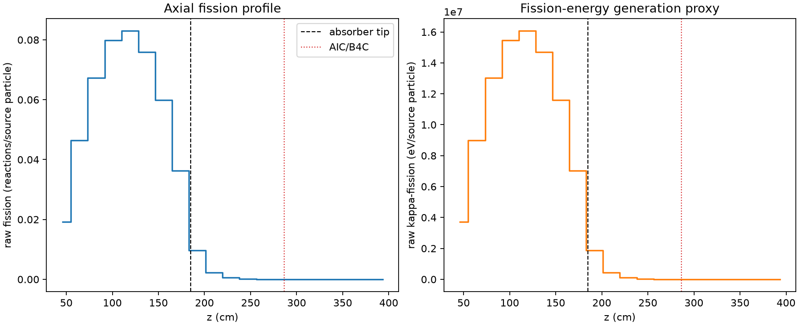
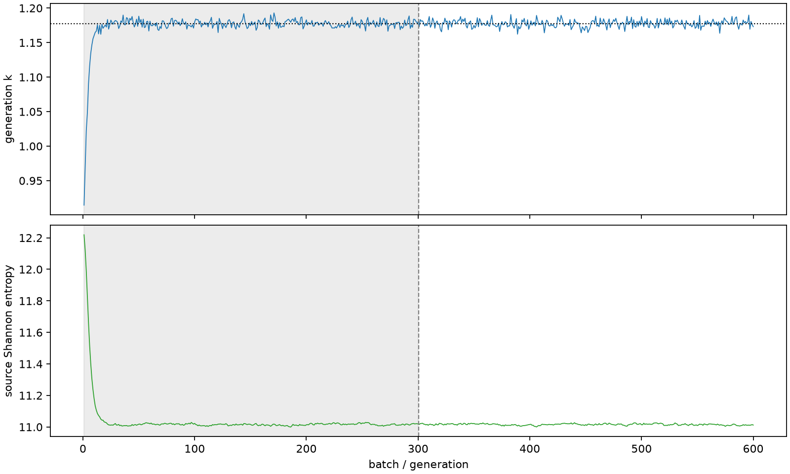

| field | value |
|---|---|
| experiment | V2-STAGE_128_OGRENCI_02-0013 |
| k | 1.1774469474192248 |
| MC standard error | 0.0001780919355976839 |
| seconds | 973.8570323940003 |
| acceptance | not_assessed |
| convergence | review_required |
Completed is output integrity only; physical and statistical review required. Zero tallies do not prove zero production or zero uncertainty.
| diagnostic | value |
|---|---|
| geometric fuel voxels | 5280 |
| zero fission tally voxels | 1163 |
| low signal fuel voxels | 2100 |
| low signal fission share | 9.232013666821449e-05 |
| low signal kappa share | 9.235778663472777e-05 |
| important fission share | 0.9501354620453172 |
| previous filter included | 3180 |
| duration estimate s | 1562.5173488400023 |
| actual minus estimate s | -588.6603164460021 |
| fission relative MC error | statistics |
|---|---|
| all_geometric_fuel | {"voxels": 5280, "positive_mean_voxels": 4117, "zero_mean_voxels": 1163, "undefined_relative_error_voxels": 1163, "median": 0.012620750732976638, "p95": 0.8031211939085514, "maximum": 1.0000000000000002} |
| low_signal | {"voxels": 2100, "positive_mean_voxels": 937, "zero_mean_voxels": 1163, "undefined_relative_error_voxels": 1163, "median": 0.49879427309893243, "p95": 1.0, "maximum": 1.0000000000000002} |
| important_95pct | {"voxels": 1952, "positive_mean_voxels": 1952, "zero_mean_voxels": 0, "undefined_relative_error_voxels": 0, "median": 0.006523428456233288, "p95": 0.010890003802727942, "maximum": 0.012752471377747442} |
| outside_previous_filter | {"voxels": 2100, "positive_mean_voxels": 937, "zero_mean_voxels": 1163, "undefined_relative_error_voxels": 1163, "median": 0.49879427309893243, "p95": 1.0, "maximum": 1.0000000000000002} |
| kappa_fission relative MC error | statistics |
|---|---|
| all_geometric_fuel | {"voxels": 5280, "positive_mean_voxels": 4117, "zero_mean_voxels": 1163, "undefined_relative_error_voxels": 1163, "median": 0.012602948186970457, "p95": 0.8028859500360148, "maximum": 1.0000000000000002} |
| low_signal | {"voxels": 2100, "positive_mean_voxels": 937, "zero_mean_voxels": 1163, "undefined_relative_error_voxels": 1163, "median": 0.4984516343008856, "p95": 1.0, "maximum": 1.0000000000000002} |
| important_95pct | {"voxels": 1952, "positive_mean_voxels": 1952, "zero_mean_voxels": 0, "undefined_relative_error_voxels": 0, "median": 0.006516021082108728, "p95": 0.010877658366175803, "maximum": 0.01273708567092471} |
| outside_previous_filter | {"voxels": 2100, "positive_mean_voxels": 937, "zero_mean_voxels": 1163, "undefined_relative_error_voxels": 1163, "median": 0.4984516343008856, "p95": 1.0, "maximum": 1.0000000000000002} |
| axial bin | fission share | kappa-fission share |
|---|---|---|
| 1 | 0.039933581138802715 | 0.03993518427432683 |
| 2 | 0.09672966921824908 | 0.09672881375464616 |
| 3 | 0.1401661094484985 | 0.14016457873136964 |
| 4 | 0.16623986147634806 | 0.16623812195053692 |
| 5 | 0.17260439783019416 | 0.17260239957470566 |
| 6 | 0.15801059062524783 | 0.1580090346379421 |
| 7 | 0.12455495051829599 | 0.12455380415970234 |
| 8 | 0.07558497971300276 | 0.0755844418368049 |
| 9 | 0.020101686625748964 | 0.020107115454424843 |
| 10 | 0.004563220609700061 | 0.004564959549872146 |
| 11 | 0.0011299626703991541 | 0.0011303924532093214 |
| 12 | 0.0002879690045253711 | 0.0002880941868593921 |
| 13 | 7.204411076406673e-05 | 7.207195774596181e-05 |
| 14 | 1.7472381255586646e-05 | 1.7479046701737275e-05 |
| 15 | 3.1441685503570735e-06 | 3.147349543695579e-06 |
| 16 | 3.208093627714113e-07 | 3.214811921163044e-07 |
| 17 | 3.965105459007392e-08 | 3.960041610474367e-08 |
| 18 | 0.0 | 0.0 |
| 19 | 0.0 | 0.0 |
| 20 | 0.0 | 0.0 |
Histories include the inactive-to-active transition at batch 300. kappa-fission approximates fission energy production, not total heat deposition.

